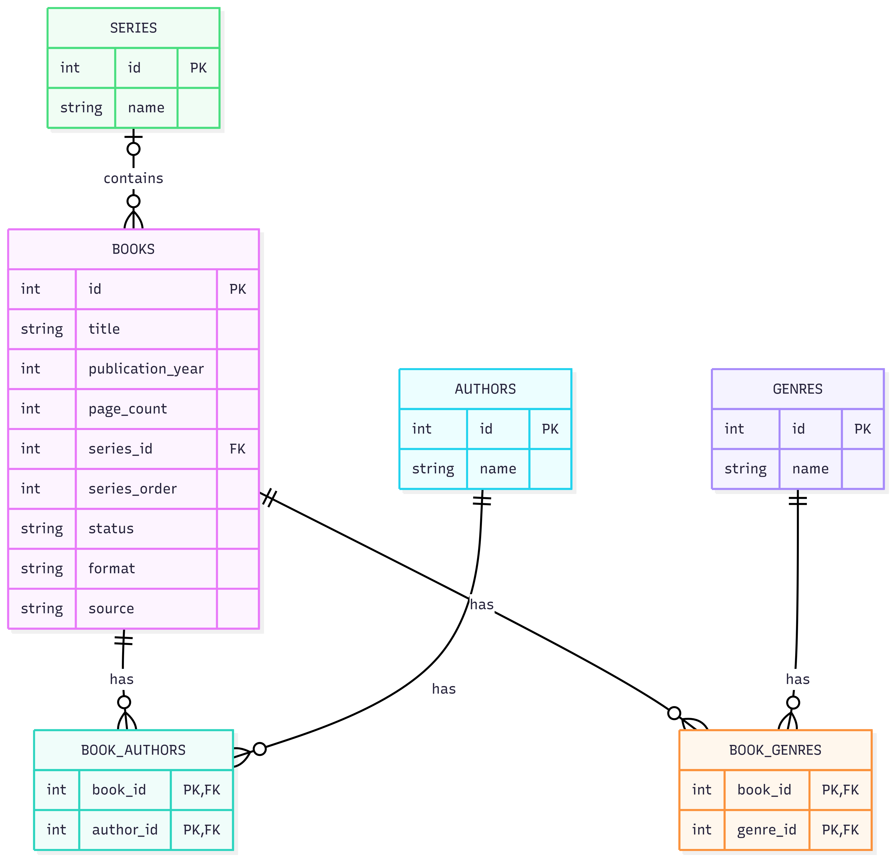

Book Tracker Database
Goodreads houdt bij wat je hebt gelezen, maar biedt weinig inzicht in onafgemaakte series. Voor mijn CS50 SQL-eindproject bouwde ik daarom een PostgreSQL-database met 200+ boeken uit mijn eigen bibliotheek. Goodreads tracks what you have read, but provides limited insight into unfinished series. For my CS50 SQL final project, I built a PostgreSQL database using 200+ books from my own library.
Wat ik heb gebouwd
What I built
- Datamodel: many-to-many relaties opgelost met junction tables (BOOK_AUTHORS, BOOK_GENRES)
- unread_sequels view: detecteert automatisch ongelezen vervolgdelen via JOIN op series_order
- Documentatie: ontwerpkeuzes en querylogica vastgelegd
- Praktijkvraag: "Hoeveel onafgemaakte series heb ik" → 5
- Data model: many-to-many relationships resolved with junction tables (BOOK_AUTHORS, BOOK_GENRES)
- unread_sequels view: automatically detects unread sequels via JOIN on series_order
- Documentation: design choices and query logic documented
- Practical question: "How many unfinished series do I have?" → 5